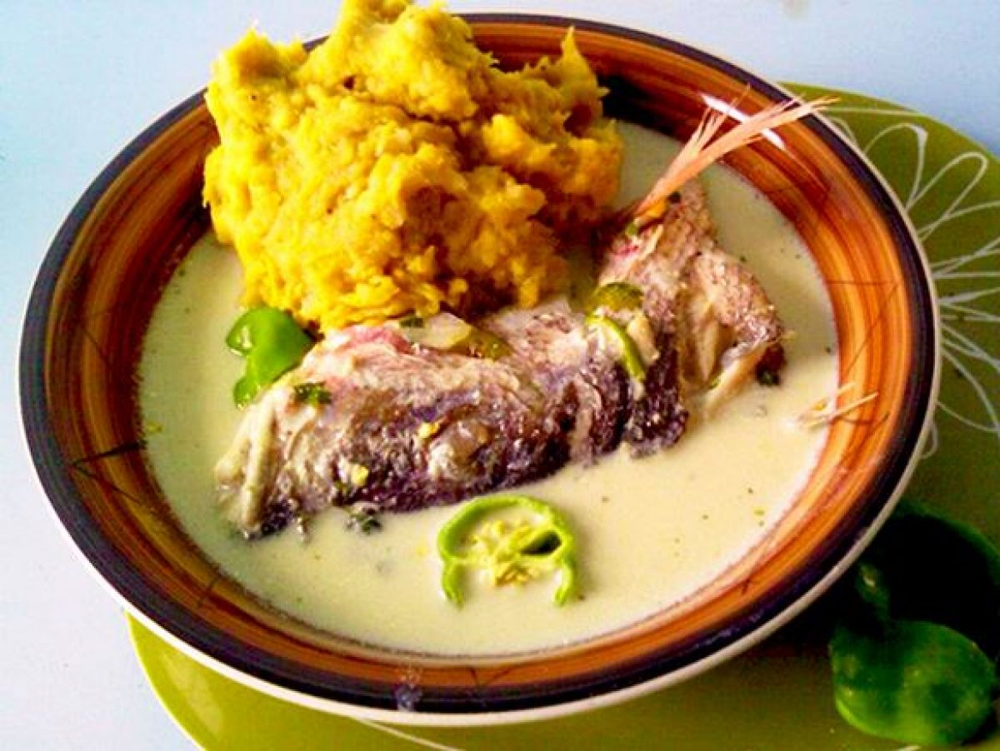
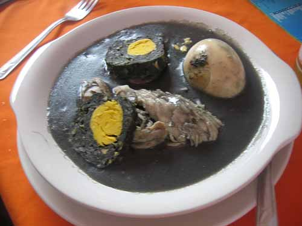
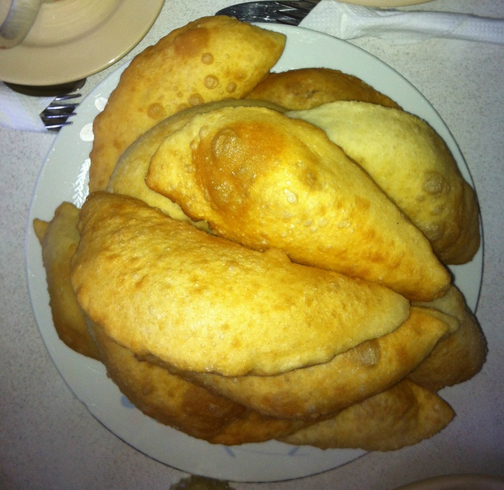
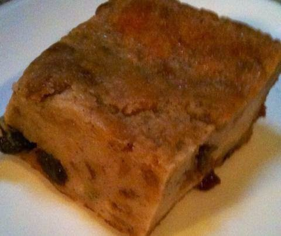
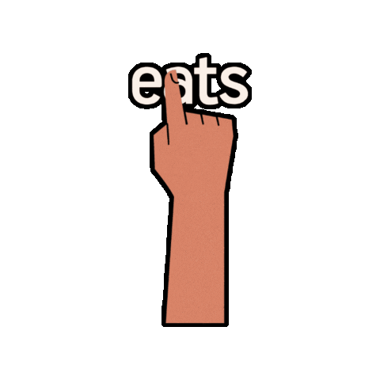

Behind Belizean Stylz
Eating healthy begins with knowing what’s in your food.
there’s nothing like enjoying a freshly cooked homemade meal.
Why not look at our Delicacies this small country Belize has to offer!
Let's begin with a quick overview of this nation.
Belize is a fairly distinctive nation that draws many of tourists.
Adventures include going to Maya archaeological sites, the Barrier Reef, and the Blue Hole.
In addition to offering a lot of entertainment, there is the natural and cultural flavours of the blend of home-cooked delicacies that give dishes an excellent taste.
Dishes
- Food
- Rice & Beans
- Hudut 
- Relleno 
- Fryjacks 
- Desserts
- Bread Pudding 
- Sweet Potato Pound

Similar Belizean Food Sites to visit
Caves BranchTop Belizean Food

Contact us
Phone: (501) 601-5757
Email: info@belizeanstylz.com